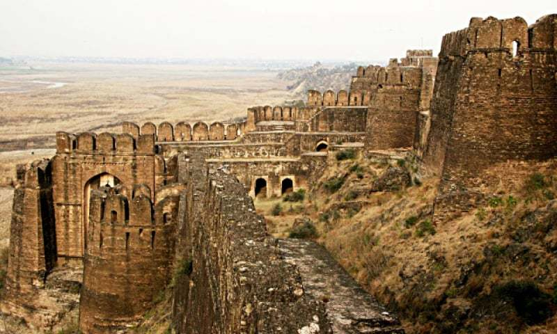

<div class="portfolio-single-load clearfix">
    <div class="custom-full-width-box">
        <div class="custom-container">
            <div class="custom-row align-items-center">
                <div class="custom-image-column">
                    
                </div>
                <div class="custom-text-column">
                    <h2 class="custom-heading">Rohtas Fort</h2>
                    <p class="custom-paragraph">
                        Built in the 16th century by the Afghan king Sher Shah Suri, Rohtas Fort is a UNESCO World Heritage Site located near Jhelum in Punjab province. Designed as a military stronghold to suppress local rebellions, the fort's massive walls, bastions, and gates stand as a testament to its strategic importance and architectural grandeur. Today, Rohtas Fort attracts tourists and history enthusiasts with its imposing structures, scenic surroundings, and rich historical significance, offering a glimpse into Pakistan's martial past and cultural heritage.

                    </p>
                </div>
            </div>
        </div>
    </div><!-- .custom-full-width-box end -->

</div><!-- end single-project -->
